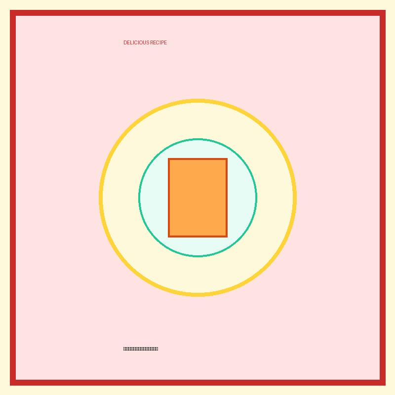

麺類
プリン醤油うどん（ウニ風風）

カスタードプリンに醤油をかけると「ウニ」の味になる！？その噂を本格的なうどんで再現。クリーミーで濃厚なコクがモチモチうどんに絡みます。
💡 こんな時・こんな人におすすめ！
安価で高級ウニ気分を味わいたい給料日前や、好奇心旺盛な友達との食事に！
📋 必要な材料（ポストイット風）
材料リスト 1
- 冷凍うどん1玉
- 市販のカスタードプリン1個
- 醤油 / めんつゆ大さじ1.5
材料リスト 2
- 刻み海苔適量
- わさび少々
🍳 作り方ステップ
1
冷凍うどんを電子レンジで加熱し、器に盛ります。
2
温かいうどんの上に、カスタードプリンをドカンとまるごと1個のせます。
3
醤油（またはめんつゆ）を回しかけ、わさびと刻み海苔をトッピングします。
4
プリンをしっかりと崩しながら、全体を均一に混ぜ合わせて召し上がれ。